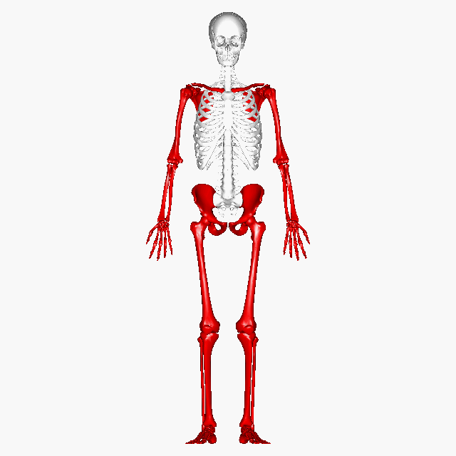
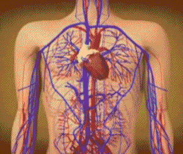
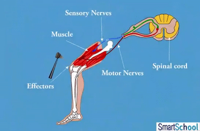

The musculoskeletal system is the structural support system of the body. It helps maintain shape and holds organs in place. In addition, it includes bones, cartilage, ligaments, joints, muscles, connective tissues that add further support and help your overall mobility. This allows it to execute reflex actions alerted by the receptors, which detect stimuli and send electrical impulses to the central nervous system, which is done from the sensory receptor's detection all the way to the motor neuron carrying information to the muscles, which in turn responds rapidly as it bypasses conscious processing through the brain. Therefore, it allows the body to protect itself from imminent danger. In specific cases such as the car crash in scenario-1, the musculoskeletal system safeguards important organs and parts of the body like the brain, lungs, heart, liver, providing multiple layers of protection such as the ribs, skull, vertebral column and muscles. In the car crash scenario, this would help by tensing the muscles and maintaining the arc of stability – which can prevent lower back pain. Additionally, bones and other soft tissue such as muscles and ligaments absorb kinetic energy to protect internal organs from getting crushed directly. Adding on, the kinetic energy from the seatbelt and airbags is distributed through the skeletal framework; which reduces pressure on important, vital, or vulnerable parts of the body.

The cardiovascular system consists of the heart, blood vessels, and blood. Its primary function is to transport nutrients and oxygen-rich blood to all parts of the body and to carry low levels of oxygen and blood back to the lungs. The primary function of the heart is to serve as a muscular pump propelling blood into and through vessels to and from all parts of the body. The arteries, which receive this blood at high pressure and velocity and conduct it throughout the body, have thick walls that are composed of elastic fibrous tissue and muscle cells. The cardiovascular system shields you in accidents, for example a car crash scenario, by pumping oxygen-rich blood, stabilizing pressure, clotting injuries, and releasing stress hormones, ensuring vital organs survive shock, trauma, and sudden physical damage.

The nervous system plays a role in everything we do daily. The 3 main parts are the brain, spinal cord, and nerves. It controls everything from thought, movement, heartbeat, and many more. With many parts, it controls everything and ensures everything is being done correctly. The nervous system consists of the central system (brain and spinal cord) and the peripheral system (somatic and autonomic).
As a car is about to crash, the nervous system detects what is happening in the environment, processes the information, and sends electrical signals to make a response as soon as possible. The electrical signals travel to the brain via electrical impulses. Then the sensory receptor processes the information to ensure nothing happens. This quick reaction ensures no physical injury happens, keeping the body safe and healthy.

The Central Nervous System is made up of the 3 most important parts, which are the brain, eyes, and spinal cord. It acts as the control center by receiving and processing information.
In this case, the reflex is a fast and automatic response to danger. The eyes see the speeding car and inform the brain immediately to help protect the body safely.
Here's a link to a special video that summarizes the concepts mentioned in this website a bit more intuitively.